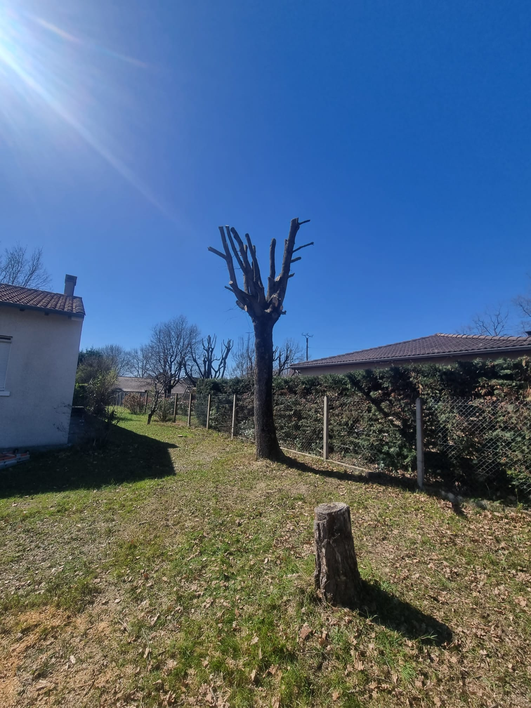
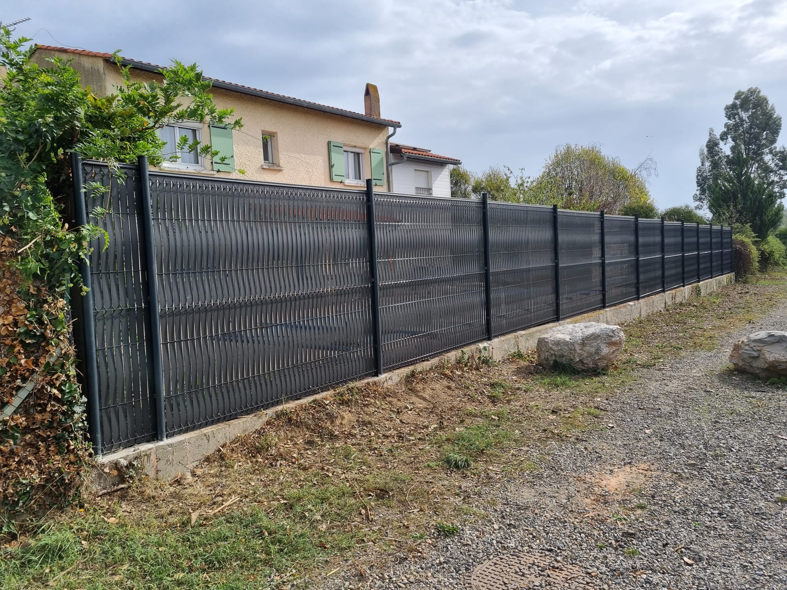

Solutions d'Experts pour votre Propriété
Nous offrons des services complets d'aménagement paysager et d'entretien pour que votre propriété conserve son meilleur aspect toute l'année.

Abattage et Élagage d'Arbres
Services professionnels de soins aux arbres, y compris l'élagage, la taille et l'enlèvement en toute sécurité. Nous entretenons la santé et la beauté de vos arbres.
- Enlèvement sécurisé
- Éclaircissage et mise en forme
- Dégâts d'orage d'urgence

Entretien de Pelouse et Gazon
Gardez votre pelouse luxuriante et saine grâce à nos services d'entretien réguliers. De la tonte à la fertilisation, nous avons tout ce qu'il vous faut.
- Tonte et bordure régulières
- Programmes de fertilisation
- Désherbage et aération

Réparation de Murs et Clôtures
Réparation et restauration expertes de murs et de clôtures. Nous réparons les dommages et renforçons les structures pour assurer la longévité et la sécurité.
- Réparations structurelles
- Remplacement de poteaux
- Installation de portails

Installation de Clôture en Filtet/Grillage
Installation de clôtures en grillage et en filet de qualité pour la sécurité, l'intimité et la protection. Matériaux durables et installation professionnelle.
- Dimensions personnalisées
- Matériaux durables
- Installation professionnelle